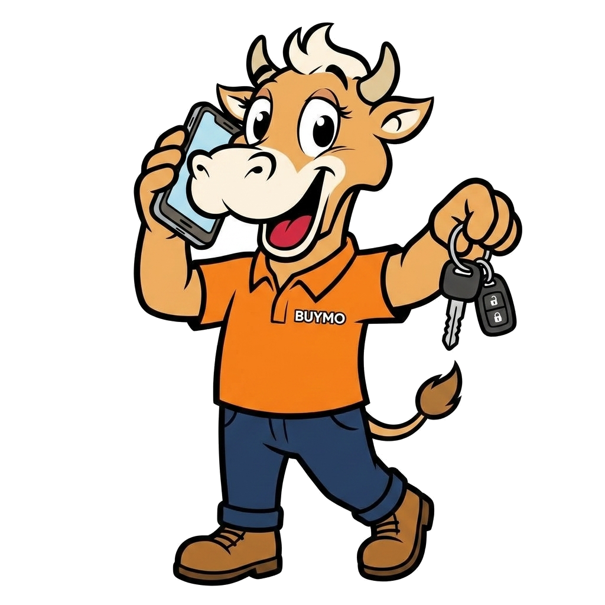

現場サポート

オークション会場・提携陸送の情報と、困ったときの連絡先・対処をまとめています。
🏁 オークション会場情報
主要な自動車オークション会場の一覧です。出品・仕入れの参考にご利用ください（開催日・詳細は各会場の最新情報をご確認ください）。
| 会場名 | 系列・特徴 | 主なエリア | 備考 |
|---|
🚚 提携陸送情報
BUYMO提携の陸送・輸送先です。手配は本部経由でも承ります。最新の料金・空き状況は本部（kaitori@buymo.me）へご確認ください。
| 提携先 | 対応エリア | 目安料金 | 連絡・備考 |
|---|
※ 掲載は一例です。実際の提携先・料金は本部が管理しています。追加・変更のご要望は本部までご連絡ください。
🛠️ クレーム処理マニュアル
お客様・落札先からのクレームは「早く・正直に・記録する」が原則。一人で抱え込まず、下記フローで対応し、必ず本部へ共有してください。
① スピード最優先（初動が命）
② 事実確認と謝意（否定から入らない）
③ 独断で金銭約束をしない
④ すべて記録に残す
対応フロー（5ステップ）
- 受付・傾聴：まずお詫びと傾聴。相手の主張・要望を最後まで聞き、感情的に反論しない。
- 事実確認：車両・書類・出品票・写真・やり取り履歴を確認。「いつ・何が・どの状態か」を特定。
- 一次回答：その場で結論を出さず「確認して折り返す期限」を提示（例：本日中／翌営業日午前）。金額・返品の約束は独断でしない。
- 本部へ共有・方針決定：本部（kaitori@buymo.me）へ状況を報告し、対応方針（返金/減額/引取/謝罪のみ 等）を一緒に決定。
- 実行・記録・再発防止：合意内容を実行し、経緯を「過去ログ」に記録。原因を出品票・査定手順に反映して再発防止。
やること
- 減点・不具合は出品票に正直に記載（クレームの最大の予防）
- やり取りは日時つきで記録（メール・チャットに残す）
- 迷ったら止めて本部に相談
やってはいけない
- 独断での返金・返品・値引きの約束
- 「言った/言わない」になる口約束
- 放置・連絡遅れ（クレームは時間で悪化）
🗂️ 過去ログ・対応事例
実際の対応事例です。同じような場面での判断・言い回しの参考にしてください（個人情報は伏せています）。新しい事例は本部が随時追加します。
| 日付 | 区分 | 状況 | 対応 | 結果 |
|---|
※ ここは「よくある実例集」です。自店で対応した事例も本部へ共有いただくと、他店の学びになります。
🆘 困ったとき
まずはここへ（本部サポート）
- 📧 メール：kaitori@buymo.me
- 💬 チャット：BUYMOサイト右下のチャットから相談
- 🕒 受付：平日 10:00〜19:00（メールは24時間受付）
よくある困りごと
- 査定額の付け方が分からない
アカデミー〈買取知識〉とトークスクリプトを確認。判断に迷う車両は本部へ写真を添えて相談。 - 書類が揃わない・名義が複雑
ダウンロードセンターの委任状・譲渡証明書を活用。特殊ケースは本部へ。 - 売却先・陸送の手配で迷う
上のオークション会場・提携陸送を参照。手配代行は本部へ依頼可。 - クレーム・トラブルが発生した
一人で抱えず、速やかに本部へ連絡。対応方針を一緒に決めます。 - 売却申請・清算の入力方法
案件ボードから売却方法を選び申請。清算内訳は「売上・請求」で確認できます。